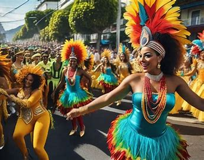
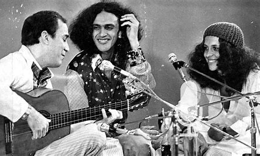
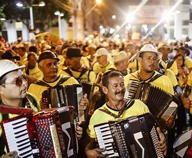
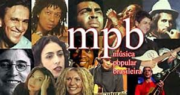

El samba es el género musical más representativo de Brasil. Nació en Río de Janeiro y es la base del famoso Carnaval. Es alegre, rítmico y contagioso, y se toca principalmente con instrumentos de percusión.
La bossa nova es un estilo de música brasileña que mezcla samba con jazz. Fue popularizado por artistas como João Gilberto y Tom Jobim, y es suave y melódico, con un toque sofisticado.
El forró es un estilo de música del noreste de Brasil que se caracteriza por su ritmo animado y su baile en pareja. Es común en festivales y celebraciones populares en esa región.
La Música Popular Brasileña (MPB) es una mezcla de géneros tradicionales como la samba, la bossa nova, y la música folclórica, con influencias del jazz y el rock. Artistas como Caetano Veloso y Gilberto Gil son grandes exponentes de este género.
Las raíces de la música brasileña son el resultado de una mezcla única de influencias indígenas, africanas y europeas, que reflejan la historia y diversidad cultural del país.